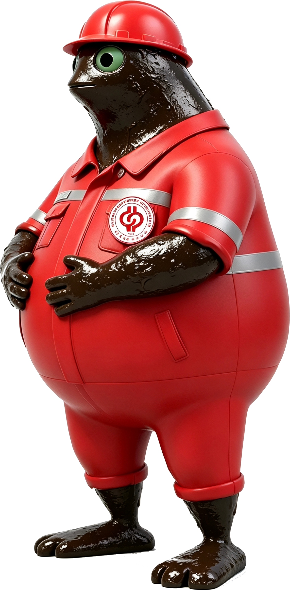
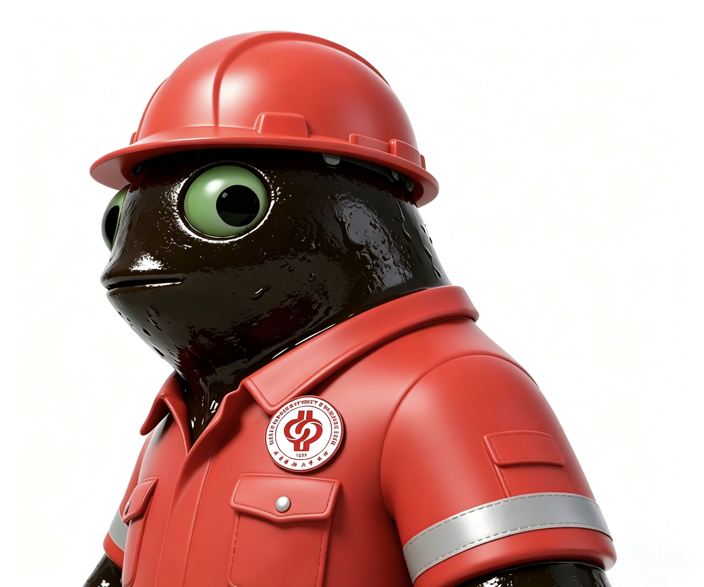
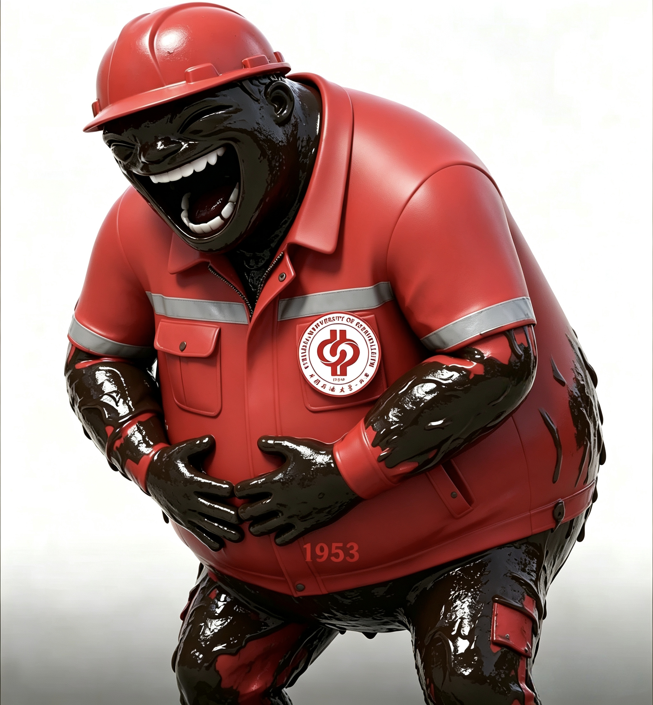
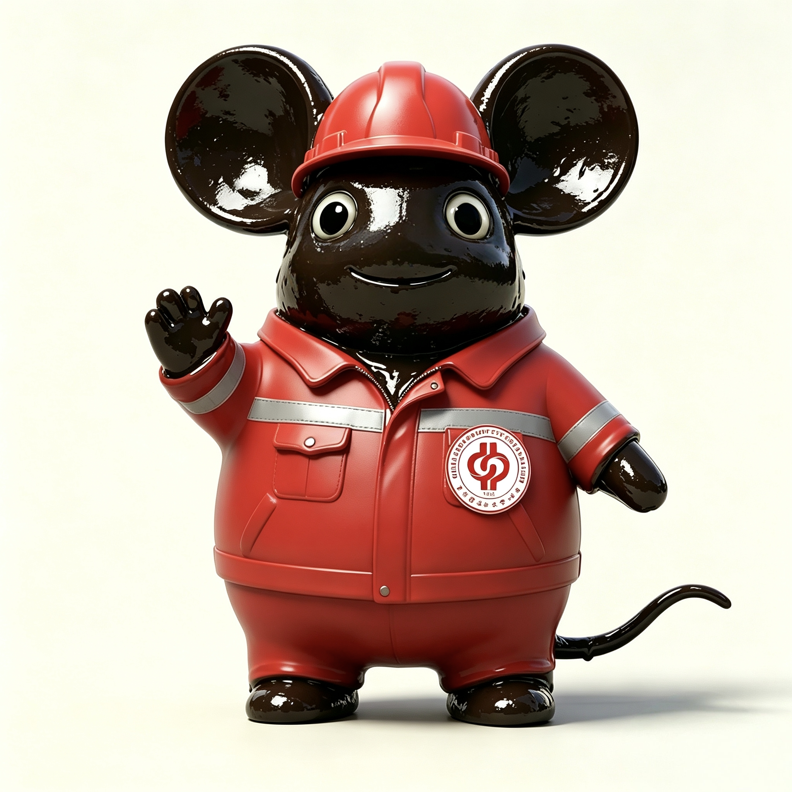
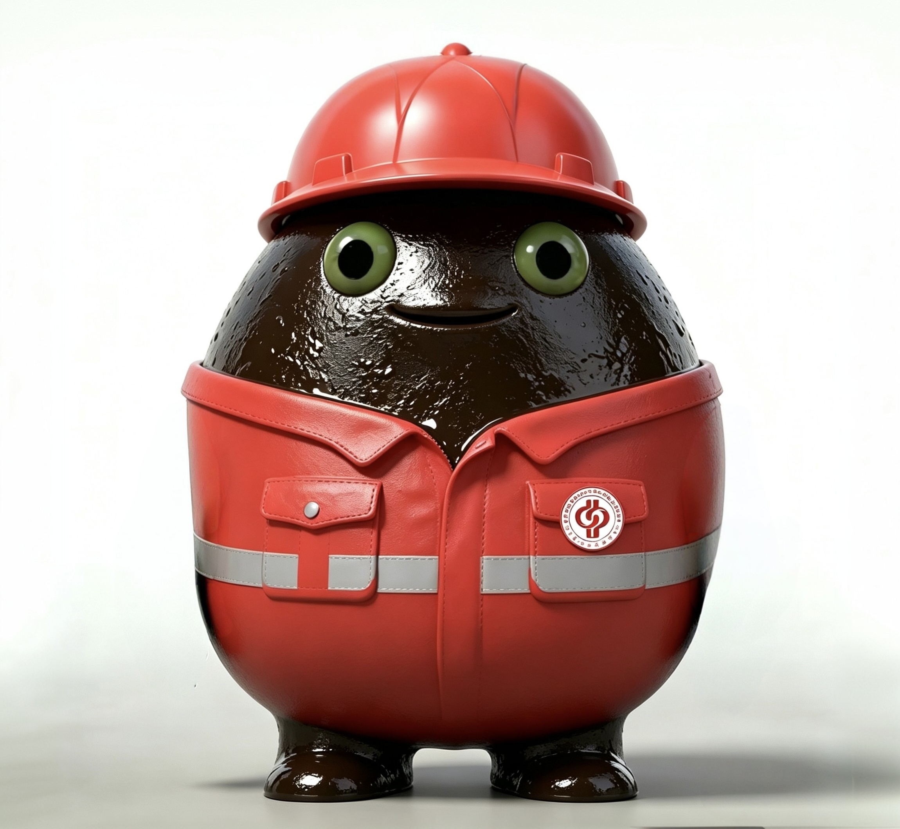
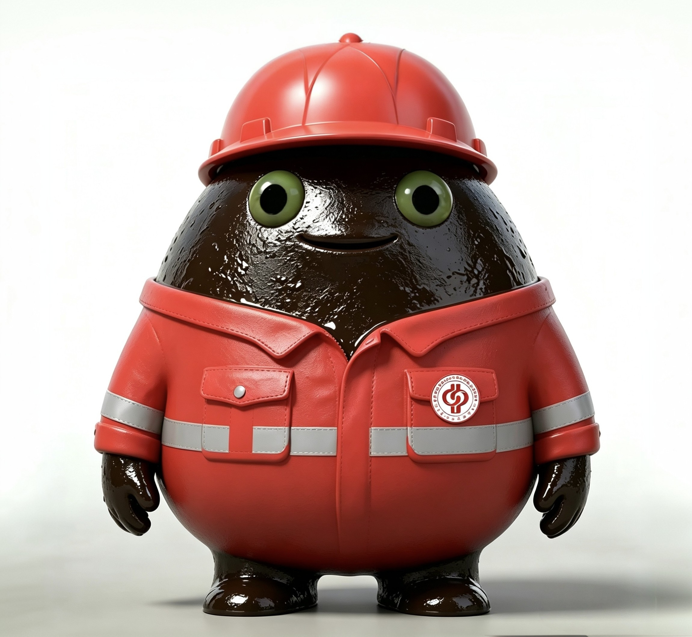
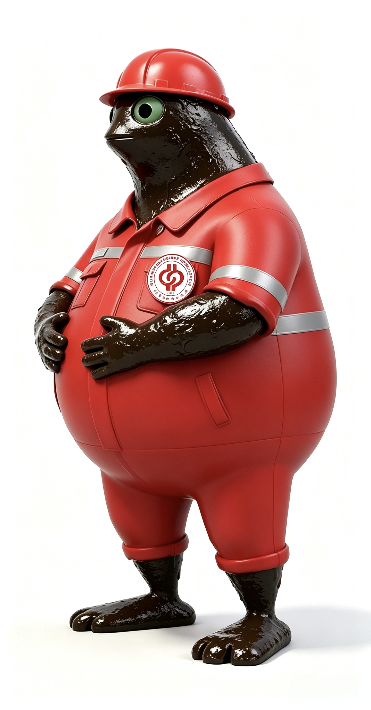

奶油大学（北京）欢迎页
中国石油大学（北京）China University of Petroleum, Beijing

进入中国石油大学（北京）即将前往：www.cup.edu.cn
学校名片
- 创校
- 1953 年 · 新中国第一所石油高等院校
- 校训
- 厚积薄发，开物成务
- 校风
- 实事求是，艰苦奋斗
- 隶属
- 教育部直属全国重点大学
- 建设层次
- 211 工程 · 双一流建设高校
- 双一流学科
- 石油与天然气工程、地质资源与地质工程
- 办学格局
- 一校两地：北京昌平 · 新疆克拉玛依
- 美誉
- 石油人才的摇篮
学校介绍
因油而生，因油而兴，因油而强，与油共进。
学校前身北京石油学院，以清华大学石油工程系为主体，汇聚北京大学、天津大学等高校石油师资，于 1952 年经批准设立、1953 年 10 月 1 日正式开学，是新中国第一所石油高等院校。
今天的中国石油大学（北京）是一所石油石化特色鲜明、以工为主、多学科协调发展的教育部直属全国重点大学，设有独立研究生院。校本部坐落在北京昌平军都山南麓，克拉玛依校区位于新疆维吾尔自治区克拉玛依市，一校两地办学。学校被誉为「石油人才的摇篮」，始终坚守「我为祖国献石油」的初心，与国家能源工业相依同行。
大事记
- 1953北京石油学院正式开学，中国石油高等教育由此开端
- 1960被确定为全国重点高等学校
- 1969迁至山东东营，次年更名「华东石油学院」
- 1988更名「石油大学」，在北京研究生部基础上成立石油大学（北京）
- 1997进入首批国家「211 工程」重点建设高校行列
- 2005更名「中国石油大学」，同年明确北京、华东两地相对独立办学
- 2017入选国家「双一流」建设高校；2022 年进入新一轮「双一流」
薪火
真拿你没办法，坐好喽。下面的故事，写给每一位石大人。
真拿你没办法，坐好喽。
这是镌刻在中国高等教育与石油工业史册里，一段关于传承、拓荒与涅槃的故事。岁月长河寂静流淌，唯有薪火相传的铿锵足音与为国奉献的赤诚心跳。
上世纪五十年代，新中国百废待兴，工业血脉——石油，极度匮乏。国家能源命脉受制于人，工业强国的梦想举步维艰 。彼时的中国，急需一所顶尖学府，培养能打破封锁、为国找油的“石油尖兵” 。
目光，投向了当时中国高等教育的巅峰——清华大学。
1952年，院系调整的浪潮中，清华园里悄然酝酿着一场关乎国家能源未来的变革。以清华大学石油工程系为基石，汇聚北大、天大等名校的石油精英师资，新中国第一所石油高等学府——北京石油学院，应运而生 。它从诞生起，便流淌着清华的血脉，承载着强国的使命 。
谁也未曾预料，这颗从清华沃土中萌发的种子，会在日后的风雨磨砺中，成长为撑起中国能源半壁江山的参天大树。
学子心声
校训墙前，「厚积薄发，开物成务」这八个字，我们读过无数遍，也用四年去学着写。
军都山的风穿过教室窗缝，「实事求是，艰苦奋斗」在这里从来不是标语——它是早八的操场、实验室的灯、和每一次野外实习结束时那张晒黑的脸。
我们从五湖四海来，把最滚烫的几年留在府学路 18 号；又带着「我为祖国献石油」这句朴素的话，散向戈壁、荒漠与海上平台。
走得再远，别人问起母校，我们都会把腰杆挺直了说：我是石大人，我念中石大。
—— 献给母校，与每一位在这里长过骨头的人
奶蛙图鉴
原图直出，不带透明通道。






奶蛙动态
抽象版 · 表情解码 (看不懂就对了)
🪑👀📖🇨🇳🏫⛽🔥➡️🔥🏜️⛏️🦅🔥⏳🌊👣❤️🇨🇳🕰️5️⃣0️⃣🏚️➡️🏗️🏭🛢️❌🌍🔒🇨🇳💭😣🏫🎓👨🎓👩🎓🧠⚙️⛏️🔨🔒🗺️⛏️🛢️🇨🇳💪👀➡️🏛️✨📅1️⃣9️⃣5️⃣2️⃣🌊🏫🌳🏛️🛢️➕🏫➕🏫➕👨🏫👩🏫⬇️🔥🎓🛢️🇨🇳🏆🧬🏛️🎒🇨🇳🌱🏛️🌳🌱➡️🌿➡️🌳➡️🌲🌧️🌪️⚡🌲🌲🌲🇨🇳⚡🛢️💪📅1️⃣9️⃣6️⃣9️⃣🌊⚔️🏭🏫🚂🚚➡️➡️➡️📍🌊🛢️🏫🏙️👋➡️🏜️🌾💨📚⛺⛏️🛢️🌱🏫🏛️➡️🌊🏫📍🔄❤️🇨🇳⛽🇨🇳💪🏫⬇️🏫⬇️🏫⬇️🏫🇨🇳⏳7️⃣0️⃣➕🌧️☀️🌪️🌈🏫🇨🇳⭐🏆2️⃣1️⃣1️⃣🛢️🔥📈🏆🅰️➕🎓⛽🇨🇳🏛️✨➡️🧬🔥🏛️🛢️➡️📜🤝❤️❌🏫➡️🏫🔥➡️🔥➡️🔥❌👑🏰🐾🏛️🌱➡️💪🏫➡️🔥🦅➡️🏔️🏆🪶📜⚖️🏭⛽⛏️🚂👷♂️👨🎓🇨🇳友情链接
- 中石大（北京）校歌 · 司凤版（仅限娱乐）bilibili
- 水视频，中石大校歌无参一半bilibili
- 中国石油大学（北京）克拉玛依校区官网
- MilkyFrog 小游戏milkyfrog.com
免责声明 · 本页面为个人娱乐作品，与该校无关
一、页面性质说明
本页面（以下简称“本页面”）为个人出于兴趣爱好及娱乐目的而创建的跳转页面，与中国石油大学（北京）（以下简称“该校”）及其任何学院、部门、附属机构、学生组织不存在任何隶属、合作、授权、赞助或 endorsements 关系。本页面不属于该校官方网站、官方社交媒体账号或任何形式的官方发布渠道，未经该校审查、批准或背书。本页面的内容、观点及任何表述均仅代表页面创建者个人，不代表该校的立场、观点或意见。
二、娱乐目的声明
本页面所包含的全部文字、图片、链接、跳转内容及其他信息，均为趣味性、抽象性及玩梗性质，纯属娱乐消遣之用。页面创建者无意通过本页面进行任何形式的暗示、影射、贬损、诽谤或人身攻击，亦无意针对该校及其师生、员工、校友或任何第三方。任何理性浏览者均不应将本页面内容解读为对任何个人或组织的负面评价、事实陈述或立场表达。本页面的目的仅在于提供轻松、幽默的浏览体验，不以盈利为目的，不用于商业用途，不涉及任何商品销售、广告推广或商业合作。
三、非官方标识及名称使用说明
本页面中如出现该校的名称、校徽、校训、标志性建筑名称或其他具有识别性的标识，仅出于描述、指代或娱乐性引用的目的，不构成对该校商标权、名称权、名誉权或其他合法权益的侵犯或挑战。该校对其校名、校徽及相关标识享有完整的知识产权。页面创建者尊重并承认该校对上述标识的全部权利。如该校认为本页面中任何标识的使用方式不当，页面创建者将在收到通知后立即予以删除或调整。
四、知识产权与版权声明
本页面的原创内容（包括但不限于页面设计、文案、代码等）由页面创建者创作，在尊重第三方权利的前提下，欢迎以非商业目的进行分享和传播。本页面中引用的第三方内容（包括但不限于图片、文字、链接所指向的内容等），其版权归原作者或原权利人所有。如有任何内容涉及版权争议，请及时联系页面创建者，页面创建者将依法配合处理，包括但不限于删除相关内容或标注正确来源。
五、内容准确性与完整性
本页面不对其所包含信息的准确性、完整性、时效性或适用性作出任何明示或默示的保证。本页面所提供的内容仅供娱乐参考，不构成任何形式的建议、指导或承诺。页面创建者保留在不事先通知的情况下随时修改、更新或删除本页面任何内容的权利。
六、责任限制
在适用法律允许的最大范围内，页面创建者不对因浏览、使用或依赖本页面内容而导致的任何直接、间接、附带、特殊或后果性损害承担责任，包括但不限于因误解、误读本页面内容而产生的任何损失或影响。浏览者应自行判断本页面内容的性质和适用性。本页面所包含的跳转链接可能指向第三方网站，页面创建者不对该等第三方网站的内容、隐私做法或行为承担任何责任。
七、隐私说明
本页面为纯静态跳转页面，不主动收集、存储或处理浏览者的个人信息。如页面使用了第三方统计工具或托管服务，相关数据处理行为受该第三方服务提供者的隐私政策约束。页面创建者建议浏览者查阅相关第三方的隐私政策以了解详情。
八、声明变更
页面创建者保留随时修改本免责声明的权利。修改后的声明将在本页面公布，并自公布之日起生效。建议浏览者定期查阅本声明以了解最新内容。
九、联系方式
如对本页面或本免责声明有任何疑问、意见或权利主张，请通过以下方式联系页面创建者：
电子邮箱：3047255505@qq.com
最后更新日期：2026.10.16